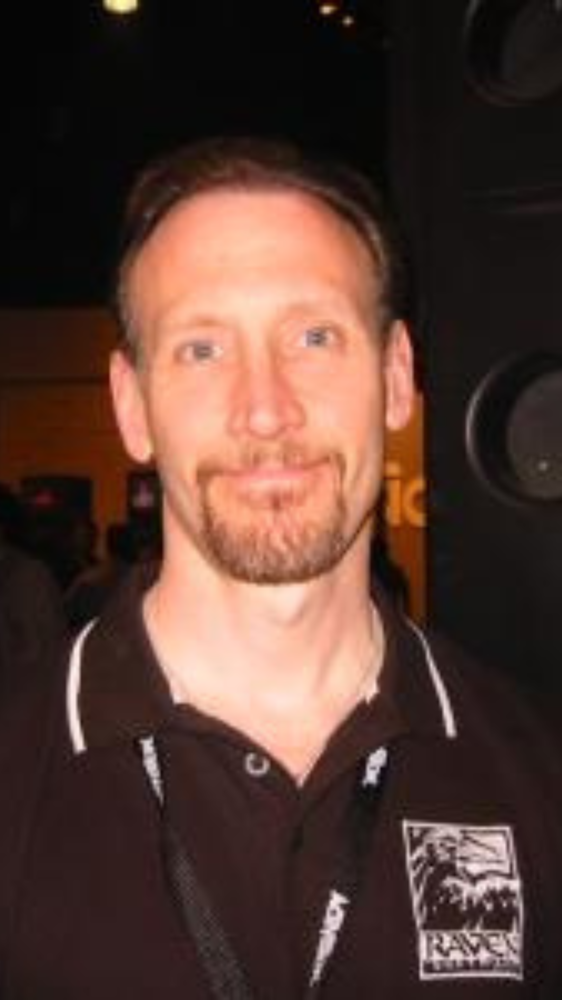

.
Hideo Kojima é um designer japonês de jogos eletrônicos que trabalhou para
a Konami. Foi vice-presidente da Konami Computer Entertainment Japan e é o diretor-executivo e chefe
de estúdio da Kojima Productions, que foi fundada em 2005 e renovada em 2015 por ele.

.
Gabe Logan Newell é o cofundador e diretor de projetos da empresa de
desenvolvimento de jogos eletrônicos e distribuição digital Valve Corporation. É uma das figuras
mais aclamadas do mundo dos games, e uma das personalidades mais fortes da indústria dos jogos
eletrônicos

.
Leslie Benzies é um desenvolvedor, programador, produtor, designer de
jogos eletrônicos, empresário e filantropo escocês. Foi presidente da Rockstar North, produtor e
game designer da aclamada série de games Grand Theft Auto, tendo responsabilidade desde Grand Theft
Auto III até Grand Theft Auto V.
.
Dan Houser foi um dos fundadores da Rockstar Games, junto com o seu irmão
Sam Houser, no entanto, ele saiu da produtora em 2020. Agora podem ter sido revelado alguns dos
motivos que levaram ao desligamento do fundador da produtora. Ele simplesmente estava indo embora —
e, depois, abriu o próprio estúdio.

.
Jesper Kyd Jakobson é um compositor dinamarquês de trilhas sonoras para
jogos eletrônicos, programas de televisão e filmes. Ele compôs trilhas sonoras para Assassin's
Creed, Hitman, Borderlands e Darksiders II. Suas composições usam orquestra, coro, manipulações
acústicas e paisagens sonoras eletrônicas.
.
Jay Pinkerton é um humorista canadense conhecido por co-escrever, com Erik
Wolpaw, a história do videogame Portal 2 da Valve. máquina". Antes de ingressar no Cracked,
Pinkerton atuou como editor-gerente do NationalLampoon.com, o site da marca nacional de comédia e
cinema.

.
Brian Raffel é um diretor de jogos, artista e designer que iniciou a
carreira na indústria de jogos em 1900. Desde então, Raffel tem trabalhado com Aspyr Media, id
Software, Raven Software e Activision. Raffel começou como o artista de Black Crypt. Então, Brian
Raffel passou a trabalhar em Black Crypt (1992) como artista.

.
Shinji Mikami é um escritor, diretor, produtor e designer de jogos que
iniciou a carreira na indústria de jogos em 1900. Desde então, Mikami tem trabalhado com Electronic
Arts, Sony Interactive Entertainment, Capcom e Bethesda Softworks. O primeiro jogo de Mikami foi
Resident Evil Portable publicado pela Capcom para PSP.